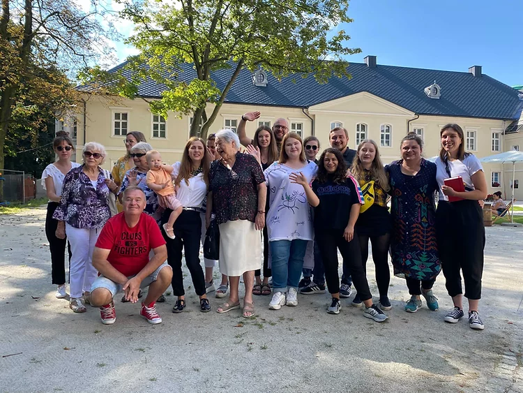

Co-design Your Place
Project overview
Last summer, I was lucky to be a part of Co-design Your Place.
What is Co-design Your Place?
It is a volunteer program that gathers young designers to work on regeneration of Palace-Park Complex in Siemianowice Śląskie. This year, we used service design as a tool to gather and implement ideas that would help us with establishing a fine crowdfunding to raise money for regeneration of the palace.
Here you can read all about the program:
Click!And here you can read about the results:
Click!
